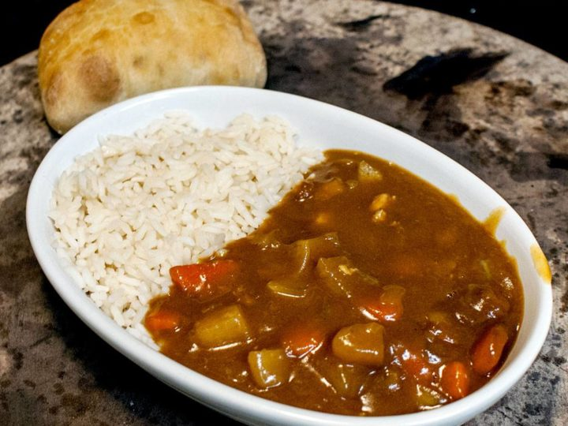

Japanese Curry Rice

Description
Curry Rice is a simple dish to make when using prepackaged curry blocks. After chopping up potatoes, beef, and carrots, one can simply simmer them in broth
and stir in the cubes for a warm, hearty dish that will surely bring a smile to your face.
Ingredients
- Stewing Beef
- Carrots
- Potatoes
- Beef Broth
- Water
- Japenese Curry Cubes
Steps
- Cut your beef, potatoes, and carrots
- Simmer them with thr broth and water in a pot for 30 minutes
- Cut the curry blocks into smaller pieces and mix them into the pot
- Continue to simmer for 10 minutes and them serve hot on rice!